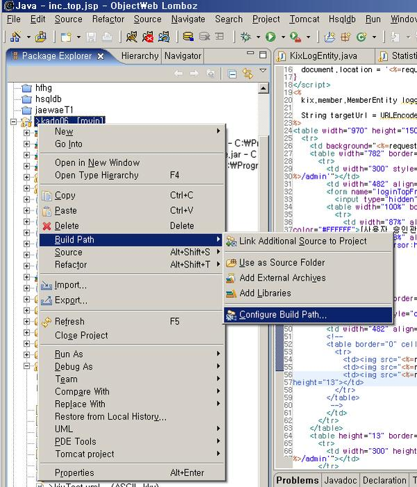
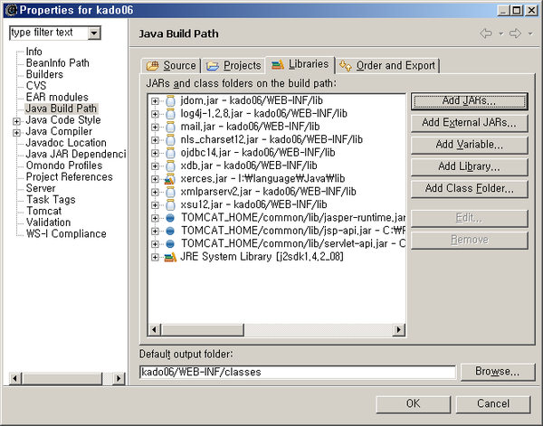

POSTS
롬보즈(이클립스)에서 자동컴파일이 안되는 현상 해결
특정 java 파일 수정 후 저장시 자동 컴파일이 안됨. 이 때 톰캣이 class를 리로드도 실패함.
그래서 톰캣 리스타트 했더니 ‘load-on-startup’ 으로 지정된 서블릿 실행이 안되서 /WEB-INF/classes를 봤더니
~.class 파일이 모두 사라짐.
귀신이 곡할 노릇
이 때 ~.java 파일 하나를 수정해주면 ~.class파일을 제대로 생성함
이걸 몰라서 예전에는 이클립스 프로젝트를 새로 만들었음
위의 방법으로 안된다면 외부 java 라이브러리를 아무거나 추가하면 모두 다시 컴파일 함.
(추가 후 컴파일 완료되었으면 추가한 라이브러리를 제거해도 됨)


그래도 안되면… 그냥 프로젝트를 새로 만든다. ㅠㅠ…